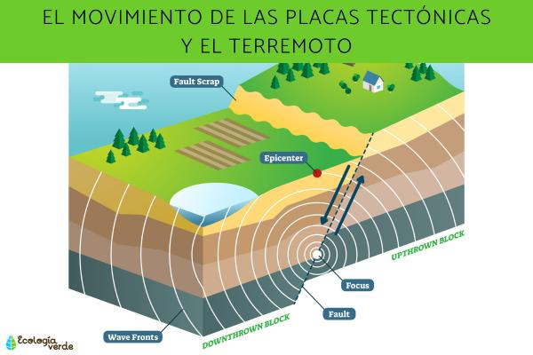
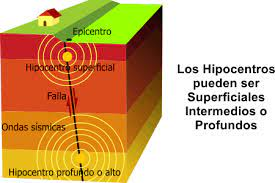

Dependiendo de la profundidad del foco de liberación de energía de un terremoto (hipocentro), es que podemos clasificarlos en tres tipos; superficiales -con un foco de 70 KM de profundidad-, intermedios –con una profundidad de entre los 70 y 300 KM- y los profundos, con más de 300 KM de profundidad.
El hipocentro o foco es el punto donde se libera la energía en un terremoto. Por su parte, el epicentro es el lugar de la superficie terrestre que se ubica exactamente sobre el hipocentro del terremoto.
ocurre cuando el foco ocurre a una profundidad entre 70 y 300 kilómetros de profundidad.
estos eventos sísmicos tienen su foco fuera de los límites de la litósfera, a más de 300 kilómetros de profundidad. Son casi imperceptibles debido a la lejanía con la superficie terrestre y también son menos frecuentes, disminuyendo drásticamente en frecuencia cuando el foco se encuentra bajo los 650 kilómetros. Este tipo de sismos se denominan Batisismos.
